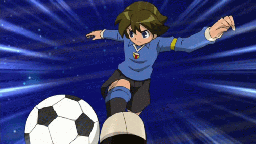

As melhores técnicas de

O que é Super Onze?
Super Onze, também conhecido como Inazuma Eleven, é um anime que narra a história de Satoru Endo, capitão do time da Raimon, escola onde o mesmo estuda.
A obra se destaca pela relação entre futebol e poderes fictícios, usados pelos jogadores durante as partidas.
Melhores técnicas
É importante ressaltar que as técnicas citadas a seguir são consideradas "melhores" apenas por popularidade e opiniões de fãs.
Mão Fantasma

É a primeira técnica usada por Endo, o protagonista, foi deixada para ele como uma herança de seu avô e com certeza é uma das habilidades mais adoradas pelo público.
Furacão de Fogo

Sendo também a primeira habilidade usada por Goenji, artilheiro do time da Raimon, essa técnica foi sua principal durante muito tempo, além de ter uma ótima coreografia.
Vendaval Eterno

Usada por Fubuki, atacante temporário do time da Raimon, o dono original dessa técnica é seu falecido irmão gêmeo, quando Fubuki a usa, na verdade, é uma dupla personalidade de seu irmão assumindo seu corpo.
Fogo Cruzado

É uma técnica em dupla, usada por Goenji e Fubuki, une os elementos fogo e gelo, usados pelos dois atacantes mais adorados do time da Raimon.
Dança do Deus do Vento

É uma técnica de drible usada por Kazemaru, lateral da Seleção japonesa e da Raimon, consiste em usar sua velocidade para confundir o adversário.
O Nascimento

Técnica da Seleção japonesa, usada em conjunto por Hiroto e Fubuki, tal técnica foi criada para destruir a defesa da Seleção brasileira.
Impulso Tsunami

Usada por Tsunami, zagueiro da Seleção japonesa e membro temporário da Raimon, consiste em usar suas habilidades de surf para gerar um impulso na bola.
Espada de Odin
Técnica de ataque usada por Fideo, artilheiro da Seleção italiana, é uma técnica muito poderosa e foi usada para evolução de Endo.
Queda Celestial

Ultima técnica de Hiroto, atacante da Seleção Japonesa. Consiste em atravessar o universo com a bola.
Big Bang

Kidou, meio-campista da Raimon e Seleção Japonesa, criou essa tecnica a partir dos Pinguins Imperiais N3, é usada em trio por Fubuki, Kido e Hiroto. A técnica "O Nascimento" é derivada dessa habilidade.